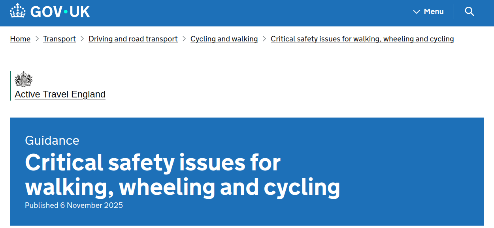

A comparison of national, city and international targets
June 27, 2026
| Target | Baseline | 2030 | 2035 | Source |
|---|---|---|---|---|
| % short journeys walked/cycled in towns/cities (England) | 41% (2018/19) | 50% | 55% | CWIS2, CWIS3 |
| Cycling stages (England, annual) | 0.8bn (2013) | 1.6bn | — | CWIS2 |
| Target | Baseline (2023) | 2035 target | Source |
|---|---|---|---|
| % children 5–16 usually walk/cycle to school | 47% | 60% | CWIS3 |
| % short stages walked/cycled in towns/cities | 48% | 55% | CWIS3 |
Key facts from CWIS3:
Why it matters for cities:
| City/Country | Current walking (all trips) | Walking target | Target year | Context |
|---|---|---|---|---|
| Germany (national) | 27% city centres | 41% (+50%) | 2030 | “Let’s Go!” National Walking Strategy |
| Ireland (national) | ~16% walking | 28% active (walk + cycle) | 2030 | 50% increase in daily active travel journeys |
| Seattle, USA | 20% walking/rolling | 27% walking/rolling | 2044 | 63% walk/bike/transit by 2044 (from 34% in 2019) |
| Boulder, USA | ~43% walk + cycle | 55% walk + cycle | 2030 | 80% walk/bike/transit/shared-vehicle by 2030 |
| Minneapolis, USA | ~15% walking | 25% walking + biking | 2030 | 35% walking + biking by 2030 target |
| London | 37% Inner, 24% Outer | Walking embedded in 80% sustainable | 2041 | Central London footfall prioritised |
| Paris | 52% city centre | Walking prioritised via 15-minute city | ongoing | Plan Piéton; car-free zones expanding |
| Copenhagen | ~25% walking | ≥25% walking (maintain) | 2025 | Each mode: ≥25% target; car ≤25% |
| Vienna | 33% city centre, 23% outer | Walking prioritised | ongoing | Compact city model |
Key observations:
| City | Current active travel | Target active travel | Target year | % cycle target | Key metric |
|---|---|---|---|---|---|
| Cambridge | ~30% cycle to work | ~40% cycle aspiration | ongoing | ~40% | Maintain highest UK cycling share |
| Oxford | 600k cycle trips/week | 1M cycle trips/week (+67%) | 2031 | ~450k/week (city) | Replace 1 in 4 car trips by 2030 |
| Greater Manchester | 33% active travel | 50% sustainable (AT + PT) | 2040 | 10% regional centre | No net growth in motor traffic |
| Manchester (city) | 6% cycling | 12% cycling (double) | 2028 | 15% by 2028 | Walking natural choice for short trips |
| Leeds | 21% walking, 1% cycling | Car ≤41% of trips | 2030 | 400% increase cycling | “City where you don’t need a car” |
| Bristol | 30% active travel | 55% active travel | 2030 | — | Net zero 2030 scenario (Cabot Institute) |
| York | ~30% active travel | Double active travel (~45%) | 2040 | — | 20% reduction in car miles by 2030 |
| Newcastle | <50% walk 5×/week, 2% cycle | 50% of journeys <2 miles AT | 2030 | 25% cycle weekly by 2035 | Complete cycling network by 2040 |
| Edinburgh | 36% walking, 4% cycling | Walking 37%, cycling 7% | 2030 | 7% (+35% km cycled) | 30% reduction in car kms |
| London | ~80% foot/cycle/PT (current inner) | 80% sustainable modes | 2041 | — | Central 95%, Inner 90%, Outer 75% |
| Birmingham/WMids | 1–2% cycling | 5% cycling (2023), 10% (2033) | 2033 | 10% | £10–20/head investment target |
| Reading | 4% cycle to town centre | 8% cycle (double) | 2030 | 10% by 2036 | Walk to town: 29% → 35% by 2030 |
| City | Current cycling share | Cycling target | Target year | Active/sustainable target | Notes |
|---|---|---|---|---|---|
| Copenhagen | 28% all trips, 49% commute | ≥25% all trips; 50% commute | 2025 | 75% AT + PT; car ≤25% | World’s best bicycle city goal |
| Amsterdam | ~32% all trips | 35% cycling | 2030 | — | 61% in Groningen (template city) |
| Paris | ~5% (2019) → growing fast | 19.6–28.5% cycling | 2030 | 100% bikeable city (Plan Vélo 2021–26) | €250m cycling plan; 65% bike traffic increase in 2020 |
| Helsinki | ~11% cycling | 20% cycling | 2030/2035 | — | Carbon neutral 2030; Baana network (140 km target) |
| Milan | ~5% cycling | 20% cycling | 2035 | — | €225m Cambio plan; 750 km cycling paths |
| Greater Copenhagen Region | Region: 16–29% | +20% increase in cycling | 2030 | — | Common goal across Zealand and Skåne |

Modal share comparison
Key observations:
| City/Region | Source document | Link |
|---|---|---|
| England (national) | CWIS2 / CWIS3 | |
| School travel (CWIS3) | CWIS3 — 60% children walk/cycle by 2035 | |
| ATE Delivery Plan | Worth Every Step (June 2026) | |
| School travel baseline | NTS 2023: Travel to/from school | |
| Cambridge | Cambridge Cycling Campaign; LCWIP | camcycle.org.uk |
| Oxford | Oxfordshire LTCP Active Travel Strategy | oxfordshire.gov.uk |
| Greater Manchester | GM Transport Strategy 2040 “Right Mix” | tfgm.com/bee-active |
| Manchester (city) | Manchester Active Travel Strategy (2023) | manchester.gov.uk |
| Leeds | Connecting Leeds Transport Strategy | leeds.gov.uk |
| Bristol | Bristol Net Zero 2030: modal share report | bristol.ac.uk/cabot |
| York | York Local Transport Strategy 2024–2040 | york.gov.uk |
| Newcastle | Newcastle Movement Strategy 2025–2045 | newcastle.gov.uk |
| Edinburgh | City Mobility Plan 2021–2030 + Mode Share Targets | edinburgh.gov.uk |
| London | Mayor’s Transport Strategy M77 Mode Share Targets | london.gov.uk |
| Birmingham / West Midlands | LCWIP / Cycling Charter | birmingham.gov.uk |
| Reading | Reading LCWIP (2020) | reading.gov.uk |
| International | ||
| Copenhagen | CPH 2025 Climate Plan / Bicycle Strategy 2011–2025 | kk.dk |
| Amsterdam | City of Amsterdam mobility targets | oliverwymanforum.com |
| Paris | Plan Vélo 2021–2026 | paris.fr |
| Helsinki | City of Helsinki cycling targets | hel.fi |
| Milan | Cambio cycling mobility plan | |
| Walking targets | ||
| Germany | National Walking Strategy “Let’s Go!” | |
| Ireland | National Sustainable Mobility Policy / Climate Action Plan | |
| Seattle | Seattle Transportation Plan (STP) 2024 | |
| Boulder | Boulder Transportation Master Plan 2019 | |
| Minneapolis | Minneapolis Transportation Action Plan | |
| Vienna | Walking mode share data (MDPI review) | |
| Paris walking | Plan Piéton / 15-minute city |